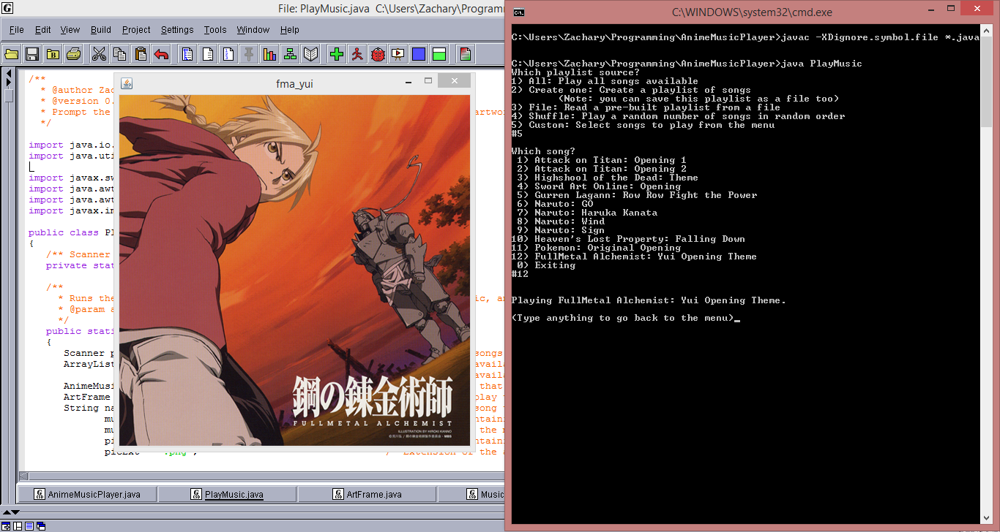

Anime Music Player
Java command line music player for playing your favorite anime theme songs.
This is a Java program that plays the anime theme or related songs selected by the user or different play-list sources (files, strings, shuffled, all songs) and displays the corresponding song artwork. You can add more songs and artwork by putting them in the corresponding folders, with the standard file name extensions specified. Then add them to the "songlist" of choice, EX: "default.songlist". This allows for a simple and easy to use command line music player.
Usage:
Windows:
Double click on the program run.exe or run.bat to start a script that compiles and runs the program.
OR
In the command line use the following commands to compile and execute the program:
REM compiles the code
javac -XDignore.symbol.file -d bin ./src/*.java
REM runs Anime Music Player
java -cp ./bin PlayMusic Unix
In the command line use the following commands to compile and execute the program:
# compiles the code
javac -XDignore.symbol.file -d bin ./src/*.java
# runs Anime Music Player
java -cp ./bin PlayMusicContents:
./mus/- Folder containing the music files that the music player can play. Standard file extension/format is ".wav"../art/- Folder containing the song artwork image files that the music player can play. Standard file extension/format is ".png".*.songlist- Song list files that contain the titles and names of the songs to choose from and played. MUST be in the following format:
Exiting
exit
(title of song 1)
(file name 1)
(title of song 2)
(file name 2)
.
.
.
(title of song n)
(file name n)
where (title of song #) is the official name of the song to be displayed, and (file name #) is the file name of the corresponding music and artwork file. Also, (file name) does not include the file extension, it is just the base name, and the first two lines are devoted to the exiting option where the second line MUST be the word "exit", with out quotes. ALL lines end with a newline EXCEPT for the last one.
-
*.sl2- Songlist 2.0, a standard songlist file that has been extended to include separate filename for the music and artwork as well as a album title. This is the new standard songlist that AMP currently uses. The format is as follows:
Exiting
exit
exit
exit
(title of song 1)
(music file name 1)
(artwork file name 1)
(album name 1)
(title of song 2)
(music file name 2)
(artwork file name 2)
(album name 2)
.
.
.
(title of song n)
(music file name n)
(artwork file name n)
(album name n)
sample.sl2- Songlist 2.0 file containing every file available. It is recommended that if any new songs/artwork is added to the mus/art folders then add them to default.sl2 as well.*.play- Play-list files that are read by the Anime Music Player to play from a file. Must be in the format# # # # 0, where # is a number corresponding to the song selection, and the white space is either a space, tab, or new line. (NOTE: ALLWAYS end a .play file with a 0 to exit, unpredictable behavior otherwise.)PlayMusic.java- Controls the music player getting the users input and processing them. Determines what music to play and what are work to display. (NOTE: This is what gets run from either the exe/bat or from the terminal cmd.)MusicPlayer.java- Public Interface for music players, alls music players implement this interface.AnimeMusicPlayer.java- The Anime Music Player's MusicPlayer that starts, stops, and keeps track of if a song has been played.ArtFrame.java- JFrame extension that is designed to show Art, song artwork. Able to paint the image from the image file and repaint with a new image.NoSongPlayingException.java- A Exception that is thrown when a Music Player tries to stop the current song when no song is playing.SongDetails.java- Class used to store information about a single song. Contains field for the title, file name (music and art), and the album name../javadocs/- Folder containing documentation of the source code. Open./javadocs/index.htmlto view../javadocs/document.bat- Batch script to document the java source code in./srcand store them in./javadocs/run.bat- Batch script that compiles and runs the AnimeMusicPlayer programrun.exe- .exe version of run.batscreen.png- Screen shot of the program running, playing a song and displaying the corresponding artwork.-
anime.ico- The icon file for run.exe.
